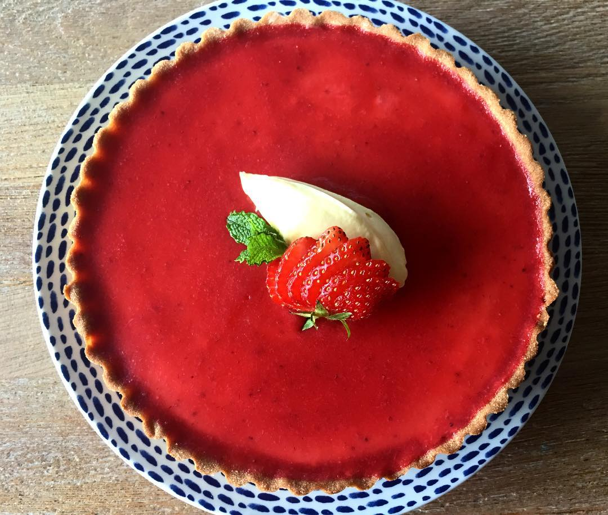

About Me!
My name is Michael Beck Tai Lye, born and raised in Kuala Lumpur, Malaysia. I'm currently studying coding in DevAcademy, and working my way towards the information technology industry. Prior to this, I've been working as a professional chef from 2012 until 2025. My hobbies are gaming and cooking, and I love learning about languages and culture.
